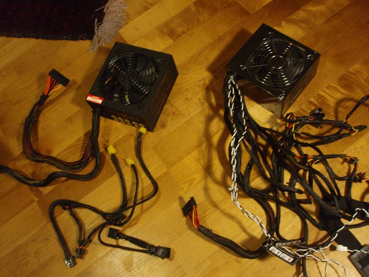

The power supply is the component that gives power to the computer. The power supply delivers voltage levels of 3.3V, 5V, or 12V. Power supply, PSU or power supply unit. It is important to have a PSU that can handle the things your computer needs. Otherwise the system may become very unstable and the life of all components can be drastically reduced if they does not get enough power. That is why it is very important that you look carefully at how many watts your computer needs and then buy a PSU after the requirements. As an example you can just watch how much power your CPU, GPU and the rest of the system needs.
For those of you that is thinking about building a computer but have no idea what the connections on the PSU does or where you are supposed to plug them in we are just going to go through the most common ones fast.
24-pin connector is the cable that provides power to the motherboard. The reason that the motherboard needs a lot of power is that it gives power to many devices that are attached to it, for example the processor. However, there are exceptions that allow the processor to have its own power supply. Before there was a PCI-express socket on the motherboard it only needed a 20-pin connector because it needed less before than it does now. Today on the modern motherboards it is almost always 24-pin connections. If you have a 24-pin connector you can scale it down to a 20-pin connector if needed.
Next up is the 2x2-pin(P4), as all the processor became stronger they needed more power so they could run properly. So when the processor needed more power it got supplied with a P4 so it could get enough.
So the next contact is the 8-pin connector that you can call either EPS12V or EATX12V. This contact has begun to show up to supply the processor in modern times. Just because it is an 8-pin connector you can scale it down to a P4 connector and use it in that way, something that is important to know is that you can also combine two P4 to get an 8-pin connector if you do not have one. It is good to use this contact if the motherboard allows it, especially if you are a person that is thinking about overclocking the processor. We can also see that some graphic cards use this contact.
Next plug is the 4-pin Molex, it is one of the most common connections and has been for a very long time. Sometimes you can call it 5.25” since it is most commonly used to provide power to older optical drives or hard drives. They are getting old though since we are going over to Sata and Sata power. A power supply usually have several 4-pin Molex plugs just because you can expand the cooling system in the computer easier with fans and fan controls. You can use adapters on them to run your graphics card for example.
Sata power as I mentioned is the cable that drives modern hard drives and optical drivers. The difference between 4-Pin Molex and SATA power is that a Sata cable also can provide 3.3V. Even if the voltage is almost never used it might be necessary in some cases.
Last but not least, PCI-Express power. The processor is not the only component that needs more power if it is overclocked or already have a very good performance. High-performance graphic cards also need more power, from the beginning there were no contact for this but this has been added later. Now it exist for the one that needs more power for their graphics card.
The effect is something that is very important in a PSU. The manufacturers usually tell you how many watts their PSU has, but not how much it might lose when it is plugged in and running. It might be helpful for you to know that if you buy a PSU with 650W it might only give 520W to your computer. The voltage can be very unstable which is not good for your components, especially if they get too little power. If you are looking for a good power supply, you should look for something that is marked with the 80 Plus icon. It has power factor correction and good components for the power. The requirement for these power supplies is that they need to have at least 80 % of the energy to be maintained while in use. Which is something very good and reliable. Otherwise you may lose 30 % of the effect which might cause problems with the computer, it might perhaps damage the components. There are various 80 Plus stages some of them are better than the others. White, bronze, silver, gold, platinum and titanium. Titanium is the best and the worst is the white but it is still better than all the power supplies that is not marked with this 80 Plus icon.
Another good thing for you is a modular power supply. If you buy a standard there will always be lots of cables that take up unnecessary space inside the computer. That is when the modular power supplies are super good. You can simply choose which cables to use and just plug them into the power supply instead of having all the different cables. This makes the computer look better, it gets better airflow which makes the computer cooler. It looks better because you do not have ugly cables that is not used and you can make the rest of the cables more hidden. When they are hidden the ventilation gets better and that is why the computer gets cooler.
Difference between modular and non modular
Right side modular - Left side non modular
